🌒 Calculating when it gets dark in Reykjavík...
🕒 Calculating countdown...
📈 Aurora Probability:
Calculating...

Calculating -BzH...
Loading Kp index...
📣 Share this forecast:
🐦
Tweet
📱
WhatsApp
📘
Facebook